Overview
In this homework I built a mesh editor that implements two major areas of computer graphics:
- Bezier curve and surface evaluation
- Half edge mesh operations like loop subdivision
For Section I, I implemented de Casteljau's algorithm to evaluate Bezier curves in 2D and extended it to Bezier surfaces in 3D using a two-pass separable approach across u and v parameters. This is how smooth scalable curves and surfaces are represented in tools like Blender and Illustrator.
For Section II, I worked directly with the half-edge data structure to implement area-weighted vertex normals for Phong shading, edge flips, edge splits, and finally Loop subdivision for mesh upsampling. The half-edge structure was the most important thing I learned in this assignment that it is a compact but powerful way to represent mesh connectivity that makes local operations like flips and splits possible without ever losing track of neighboring elements.
The most interesting thing I learned was how much precision mesh operations require. A single wrong pointer assignment can cause holes, spikes, or crashes, and the only way to debug it is to carefully trace every closed loop by hand. Loop subdivision also taught me how mesh symmetry directly affects subdivision quality. The cube's asymmetric diagonals cause it to subdivide unevenly, and pre-processing by splitting those diagonals restores the symmetry needed for a clean rounded result.
Bezier Curves and Surfaces
Using de Casteljau subdivision to evaluate parametric curves and surfaces.
Part 1
De Casteljau's algorithm is a recursive method used to evaluate points on Bézier curves. If you haven't
worked with Bézier curves before, they are one of the most important tools in computer graphics.
Unlike the flat triangles we use to represent meshes, Bézier curves let us represent perfectly smooth,
scalable curves and surfaces, the kind you see in drawing software like Adobe Illustrator or 3D
modeling tools like Blender.
The big idea behind the algorithm is elegantly simple. Given a set of control points and a parameter t
(a value between 0 and 1 that represents "how far along" the curve you are), we repeatedly linear
interpolate or lerp between every pair of adjacent points using the formula:
This takes n control points and produces n-1 new intermediate points.
We keep applying this same step to the resulting points, each time shrinking
the set by one, until we are left with a single point.
That final point is exactly where the Bezier curve lives at parameter t.
In my implementation, each call to evaluateStep performs exactly one level of this reduction.
It loops through the input points, applies the lerp formula to each adjacent pair, and returns the
new smaller set of intermediate points. The full curve is traced out by evaluating this process for
every value of t from 0 to 1.
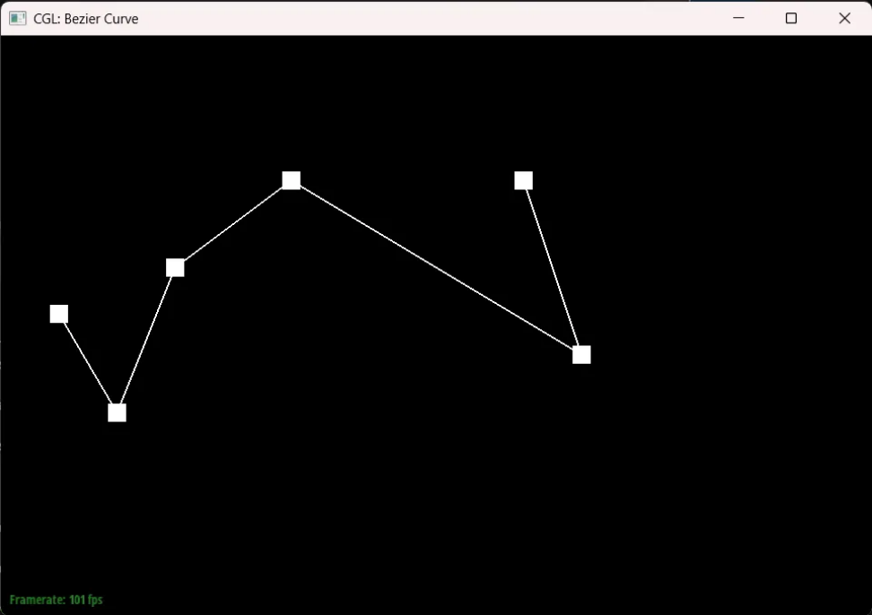
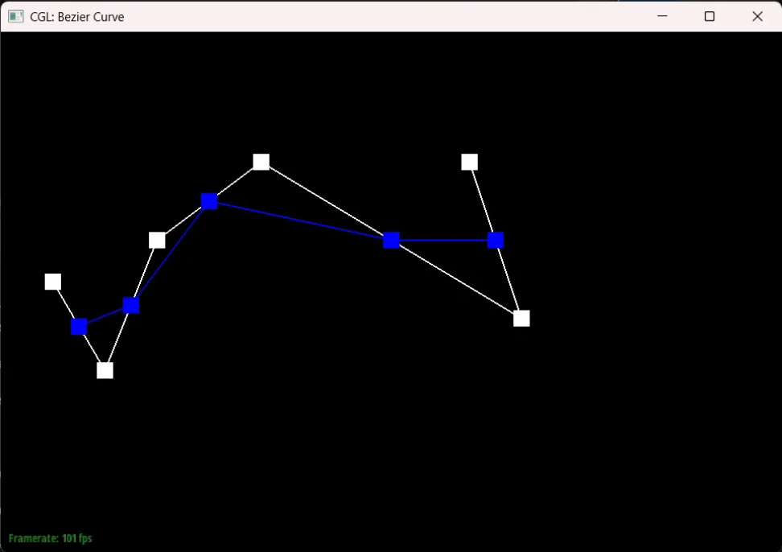
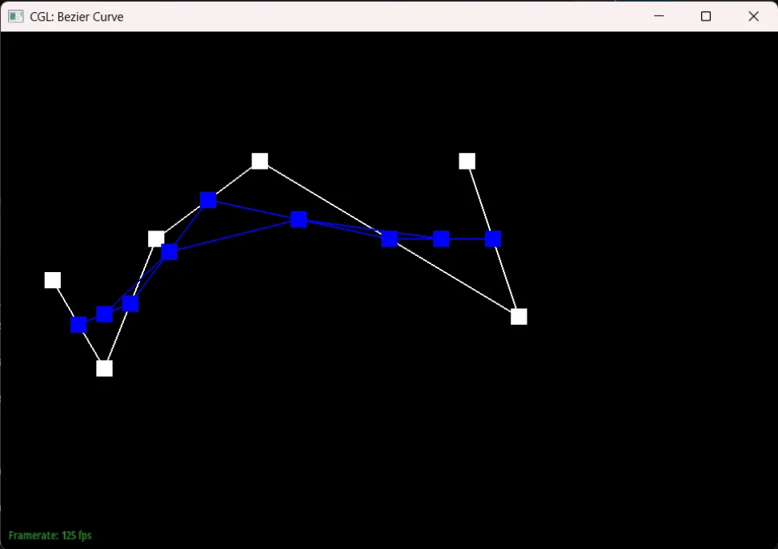
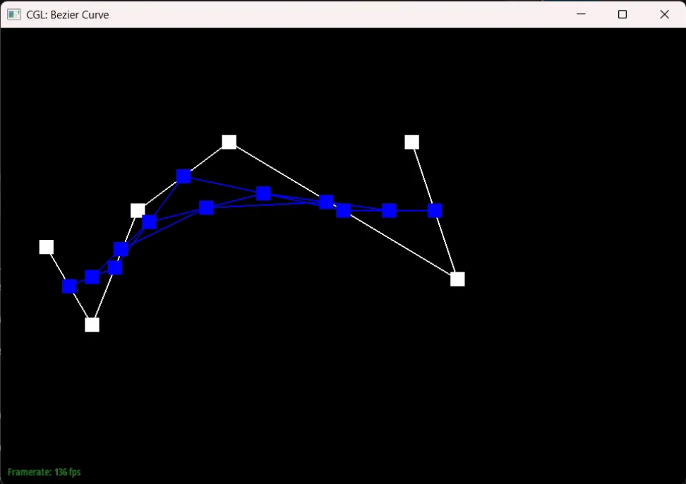
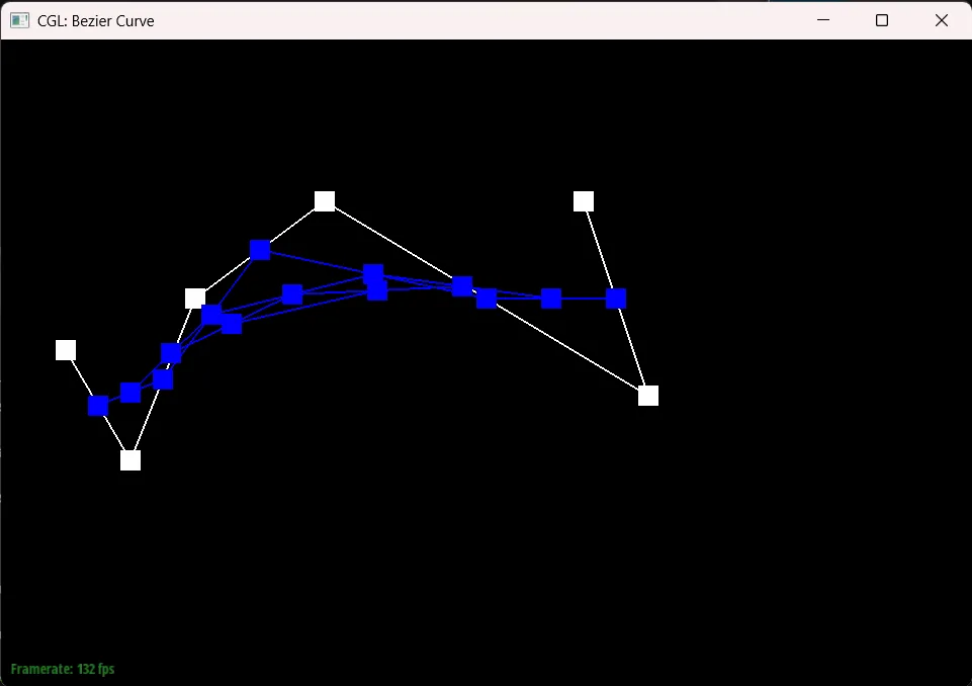
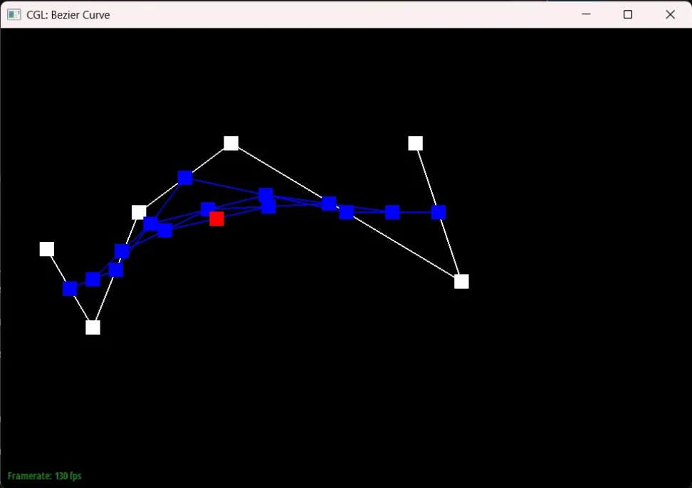
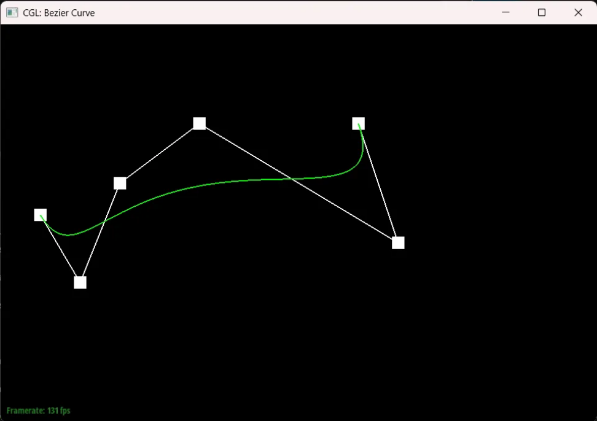
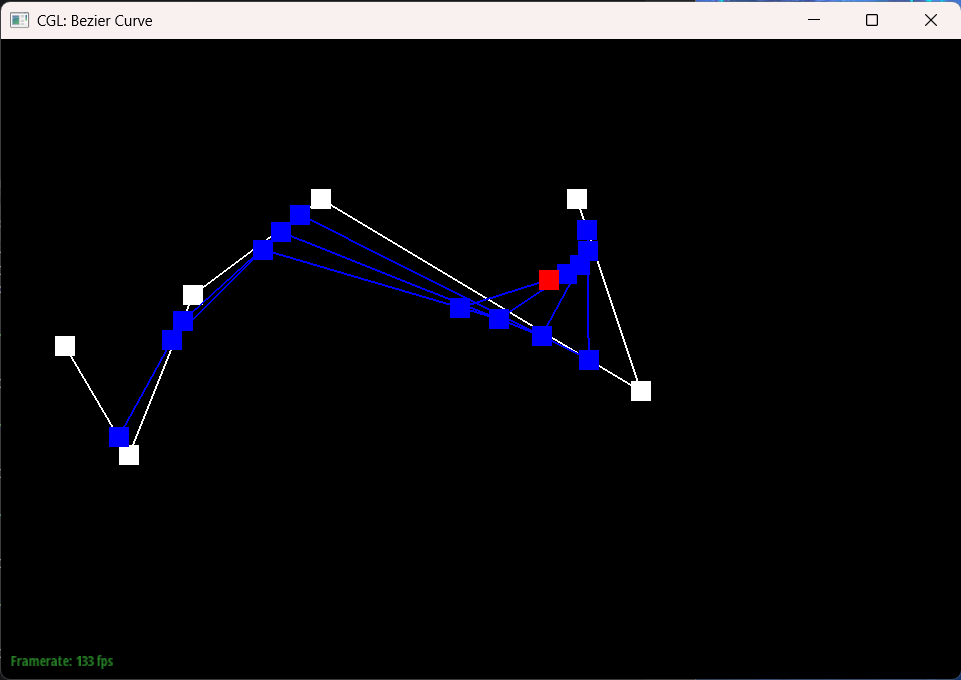
Part 2
In Part 1, de Casteljau's algorithm evaluated a smooth curve by repeatedly finding interpolated points
between adjacent control points until a single point on the curve was found. Part 2 extends this same
idea to surfaces by applying it in two directions instead of one.
Think of it like this, It's how I thought of it, instead of one row of control points defining a curve,
we now have an n x n grid.
First run de Casteljau across each row using parameter u, which gives us one point per row, as if we
are evaluating multiple curves side by side. Then we take those resulting points and run de Casteljau
one more time using parameter v. That final single point lies on the surface.
Imagine generating multiple Bézier curves side by side and then connecting them into a sheet. Depending
on how the control points are arranged, you get different curvatures, concave or convex, which is how
the teapot's complex smooth surface is produced from just a grid of control points. In my
implementation, evaluate1D handles fully reducing a row to a single point, and evaluate computes
the two-pass process across u and v.
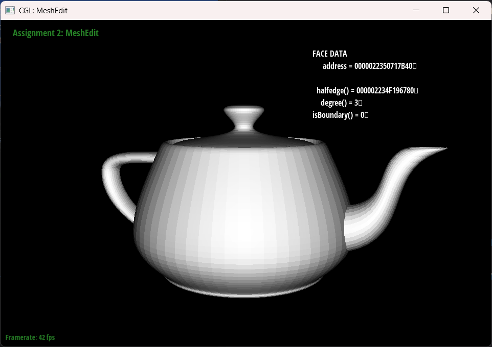
Triangle Meshes & Half-Edge Data Structure
Local mesh operations and Loop subdivision using the half-edge data structure.
Part 3
To compute the area-weighted vertex normal, I used the half-edge data structure to iterate through all
the neighboring faces of a given vertex. The key insight came from the printNeighborPositions example
in the half-edge primer. Since every half-edge's source is a vertex, and a triangle has three vertices,
I could get all three positions of a neighboring face by starting at the current half-edge and traversing
to its twin and next half-edges.
The half-edge structure guarantees that every face, vertex, and half-edge are all connected to each other
because a half-edge always starts from vertex i to vertex j, and its twin always goes from j back to i.
Since the spec guarantees all polygons are triangles, every face is guaranteed to be connected through
this chain of half-edges with no floating vertices. The only thing the data structure does not guarantee
is whether an edge is a boundary, which is why I explicitly check isBoundary() and skip those faces.
For each valid neighboring face I retrieved the three vertex positions p0, p1, and p2, then computed
cross(p1-p0, p2-p0). This is where the area weighting comes from naturally. The cross product gives
the area of a parallelogram formed by two vectors, and since a triangle is exactly half of a
parallelogram, the magnitude of the cross product is always twice the triangle's area. This means
larger triangles automatically produce longer cross product vectors and contribute more to the final
normal sum without any extra weighting calculation needed. Finally I called .unit() on the accumulated
sum to normalize it to a unit vector.
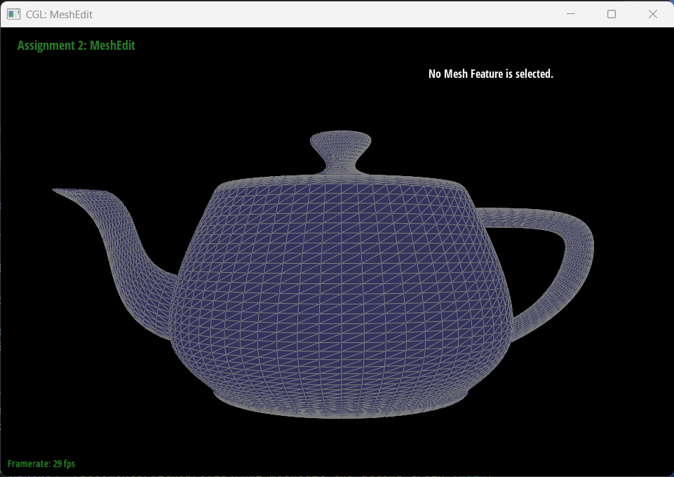
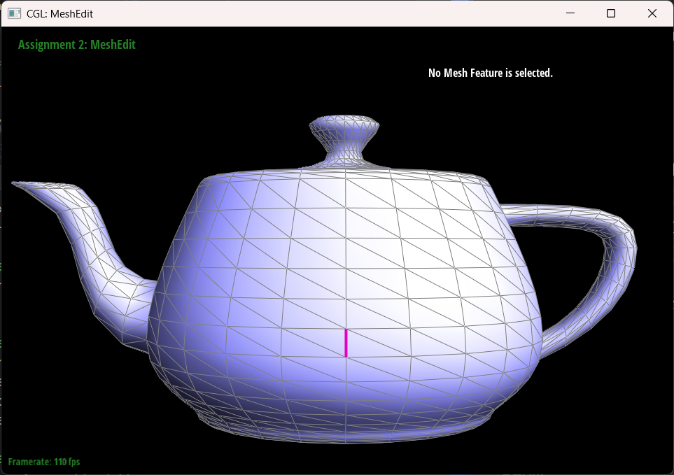
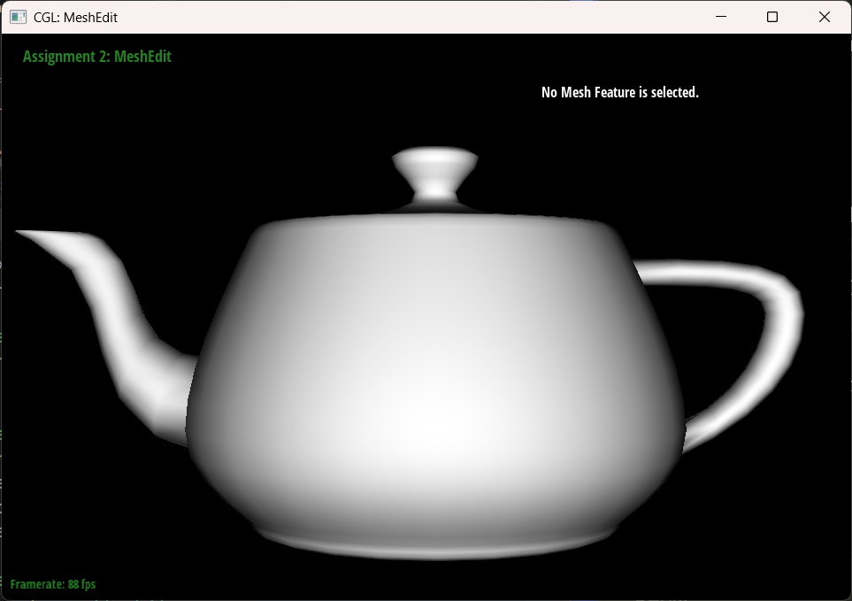
Part 4
To implement edge flip, the most important first step was understanding how all the elements of the half-edge data structure interact with each other when two triangles share an edge. Before writing any code, I went back to basics and drew out the two triangles with all their half-edges, twins, vertices, edges, and faces labeled using the exact variable names I would use in my implementation. Seeing the before and after states visually made it clear which connections needed to change.
The key insight is that an edge flip does not create or destroy any elements, the same vertices, edges, faces, and half-edges all still exist, only their pointers to each other change. Using setNeighbors() I reassigned the next, twin, vertex, edge, and face pointers for all six inner half-edges to reflect the new triangle configuration. Because the half-edge data structure does not update anything automatically, I also had to manually update the halfedge pointers for all four vertices, all five edges, and both faces to make sure nothing was left pointing to stale connections.
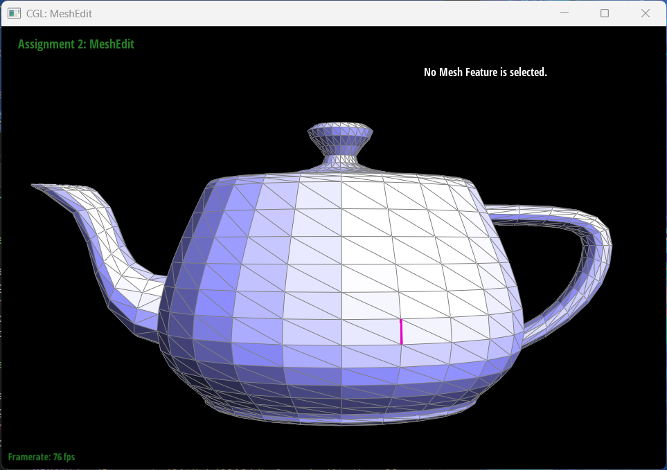
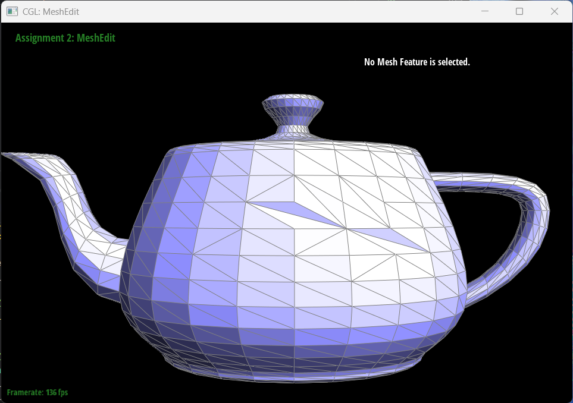
The biggest debugging lesson from this part was to always verify your pointer assignments by tracing the closed loops, each face's half-edges should form a cycle of exactly three next functions. Once I confirmed both triangles formed valid closed loops, the implementation worked correctly with no holes even after repeatedly flipping the same edge.
Part 5
I approached Part 5 similarly to Part 4 by drawing out the before and after states with all elements labeled using my actual variable names. The key difference from edge flip is that edge split introduces entirely new mesh elements. Specifically one new vertex at the midpoint of the split edge, three new edges, two new faces, and six new half-edges. Unlike flip where you only reassign pointers, here you have to carefully manage both old and new elements together.
The most important thing to get right was maintaining the counterclockwise "flow" of half-edges around each of the four new triangles. Each face needs its three half-edges to form a valid closed loop, and when connecting new half-edges to old ones I had to make sure the direction was consistent so that subsequent edge flips on the newly created edges would still work correctly.
A key part of the implementation was correctly setting the isNew flags on edges and the new vertex. This is critical for Part 6, the loop subdivision algorithm needs to know which edges and vertices existed in the original mesh and which were created by the split. I also made sure the new vertex's halfedge points along the original split edge rather than one of the new edges, following the spec's requirement.
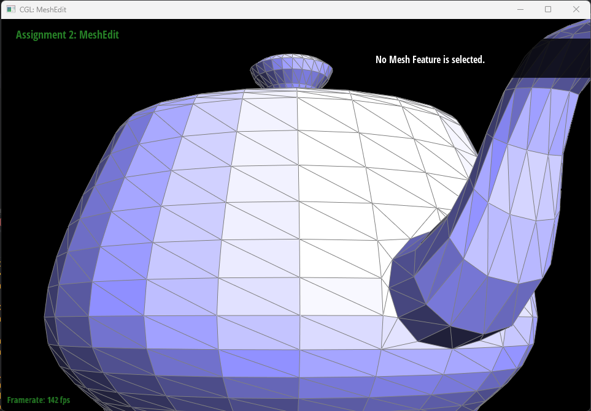
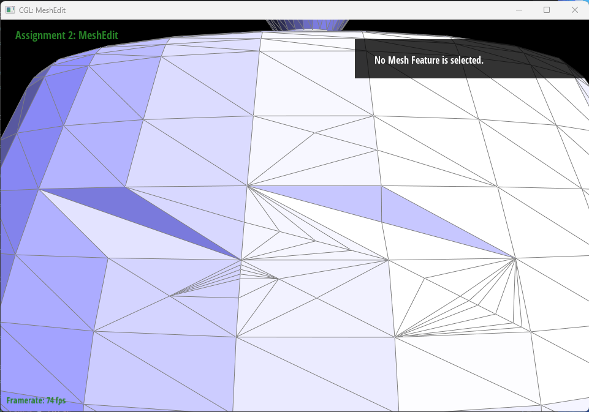
Part 6
Sharp corners and edges on the cube become progressively smoother with each subdivision level. Each iteration creates more triangles and introduces new vertices, which effectively "files down" the sharp edges.
Subdivisioning through the upsample function is evenly redistributing geometry across more planes. After several subdivisions, what was once a hard 90-degree corner becomes a soft, rounded curve as the increased vertex density pulls the shape toward an oval form. Imagine putting a piece of paper, firm so it can hold its shape, and perpendicular to a table corner, but do that repeatedly. That's a lot of paper but each paper is a triangle plane, the corner gets smoother.
The cube subdivides asymmetrically without pre-processing because each face of the original cube mesh has a single diagonal edge cutting across it, and all these diagonals run in the same direction. This means the mesh has no rotational symmetry! When Loop subdivision computes new vertex positions using neighbor averages, vertices on one side of each diagonal have a different connectivity than vertices on the other side, causing the shape to lean and distort unevenly.
Pre-splitting the diagonal edge on each face before subdividing creates an X pattern on every face. Making this X gives each face two triangles that mirror each other. This restores the mesh's symmetry so that every vertex has equivalent connectivity to its neighbors. When Loop subdivision runs on this pre-processed mesh, the neighbor-weighted averaging is applied uniformly across all faces, producing a symmetric rounded result! Symmetry with faces is really depends on mirror another face.
Old vertex update: \( (1 - nu)\,\text{orig} + u\,\text{neighbor\_sum} \)
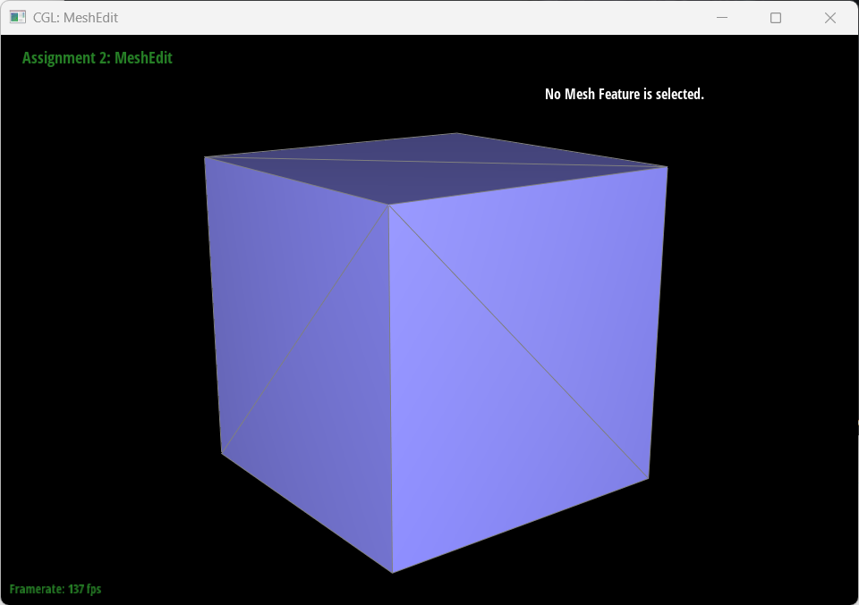
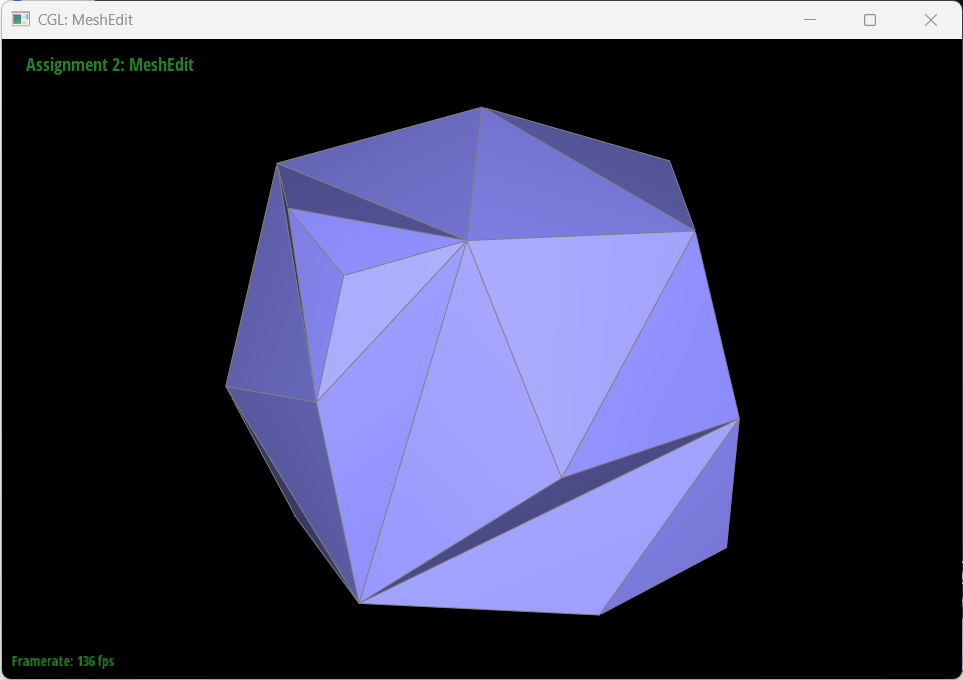
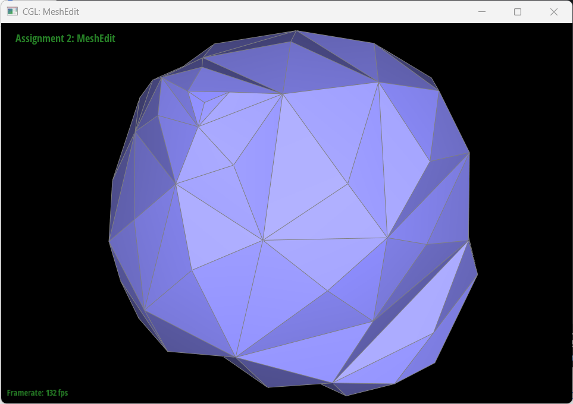
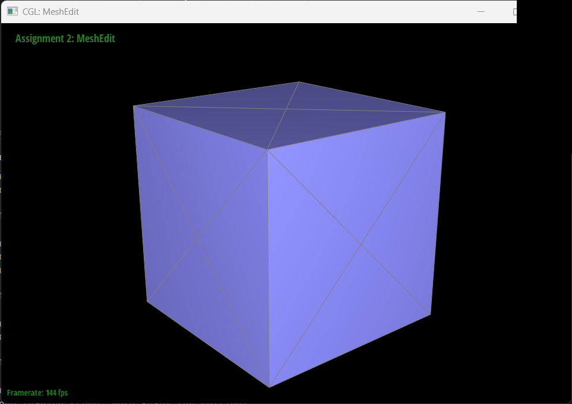
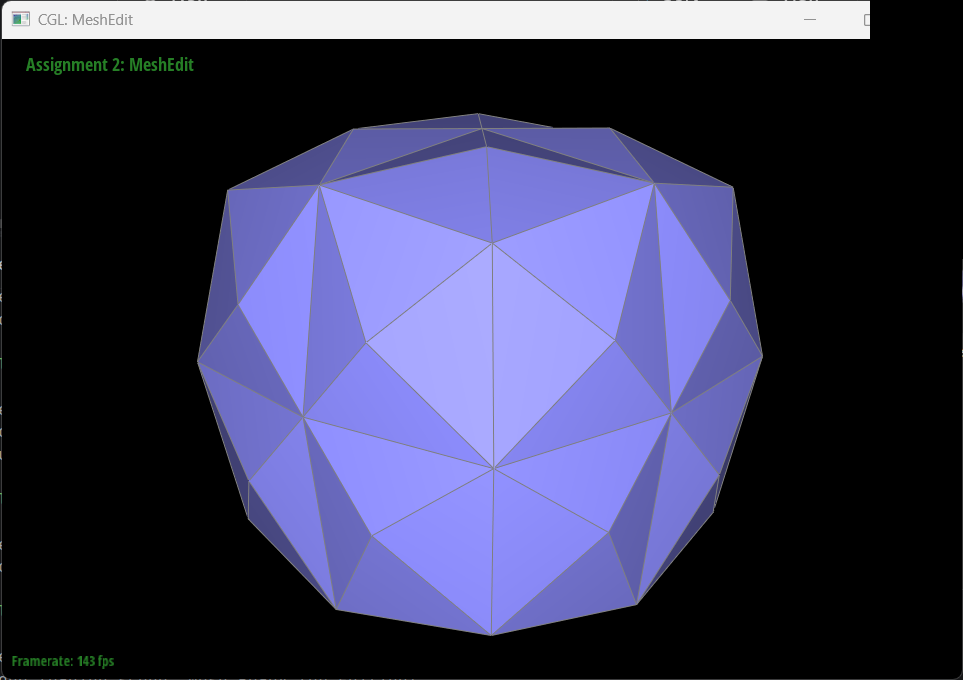
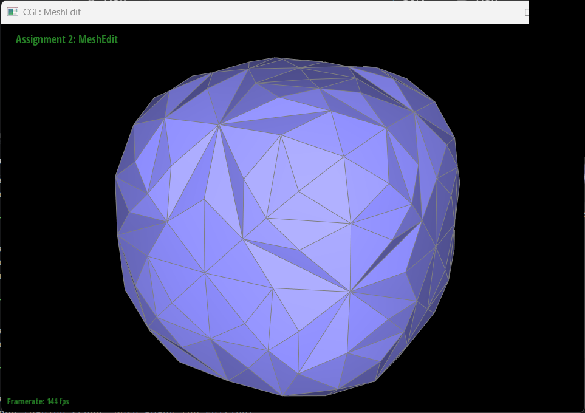
The biggest bug came from the isNew flags on the new edges created in splitEdge. When Part 6's loop subdivision ran, it uses these flags to decide which edges to flip in Step 4. Upsamples only flips new edges that connect an old and new vertex. Initially all three new edges (eA1, eB1, eC1) were marked isNew = true, but eA1 and eB1 run parallel to the original split edge and should NOT be flipped. Only eC1 truly connects an old vertex to a new one across the mesh. Marking eA1 and eB1 as isNew = false fixed the black triangles and wrong flips entirely.
Another subtle bug was that only 2 levels of subdivision were possible. This was because the isNew flags on edges and vertices were never reset at the start of each upsample call. Adding reset loops at the very beginning of upsample fixed this, allowing unlimited subdivision levels.
A third issue, I promise its the last one, was that Step 2's edge loop condition was written as e != mesh.edgesBegin() instead of e != mesh.edgesEnd(), meaning the loop never ran and all new vertices were placed at the origin, exploding the mesh.